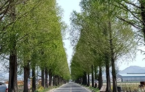

홈
신방리 음나무군
다호리 고분군 마을
주남저수지
창원 단감 테마공원
죽동마을 메타세콰이어길
동읍 나들이
죽동마을 메타세콰이어 길
• • • •
주변에 건물이 없어 멀리서도
쉽게 찾을 수 있어요
가을 단풍이 들었을 때 사진찍기
가장 좋아요
봄과 여름에는 청량감을
느낄 수 있어요
마을 자체가 한적해서
드라이브하기 좋아요
나들이 팁
• • • •
버스 하차 정류장: 죽동마을
논 사이에 있는 도로라서
주차장이 없어요
시골 도로라서 화물 트럭이
자주 지나가 위험해요
초행길엔 찾아오기
어려울 수도 있어요
인도가 없어 산책은 정말 위험해요
주소
• • • •
경상남도 창원시 의창구 동읍
죽동리 321